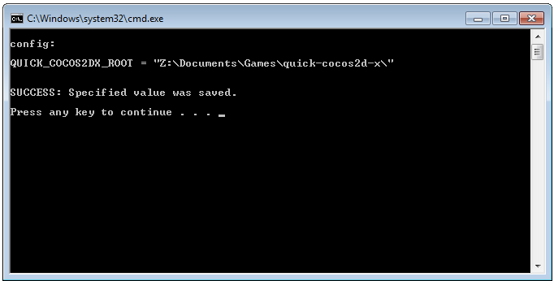
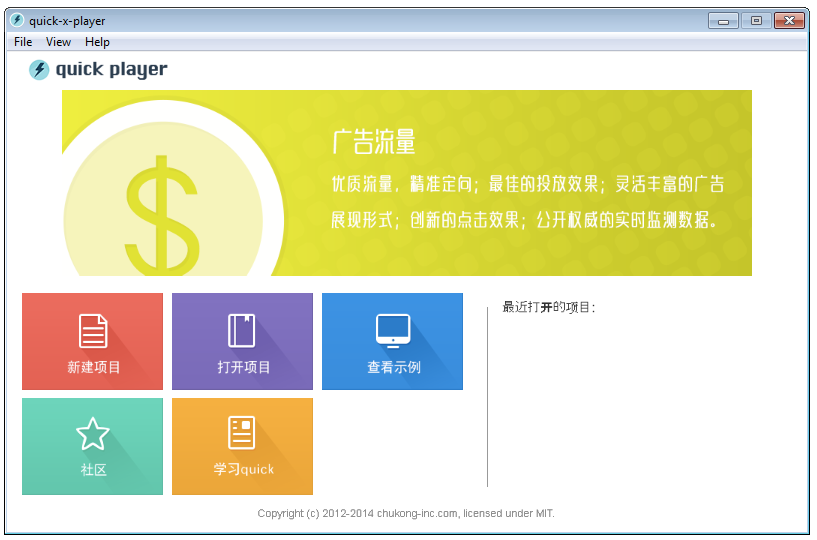
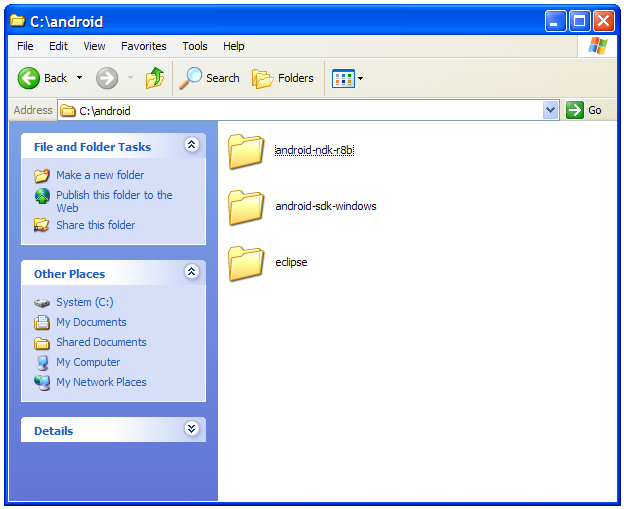
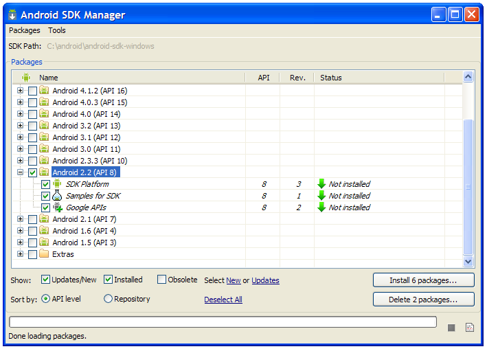
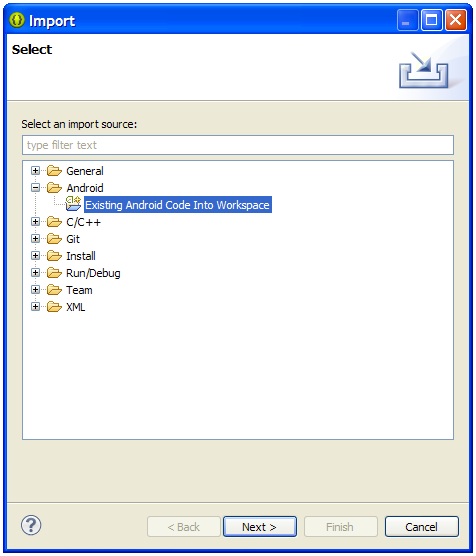
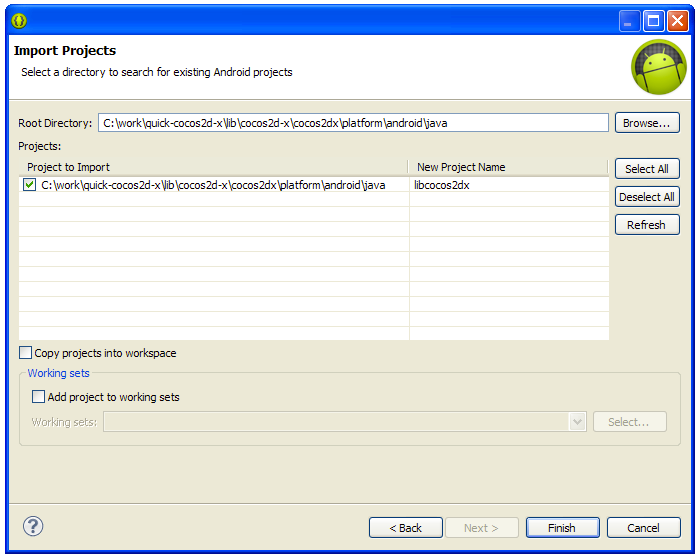
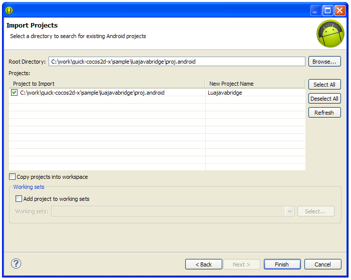
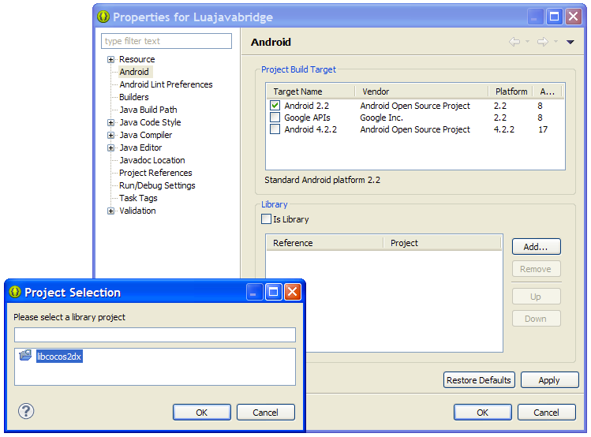
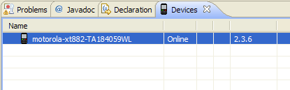
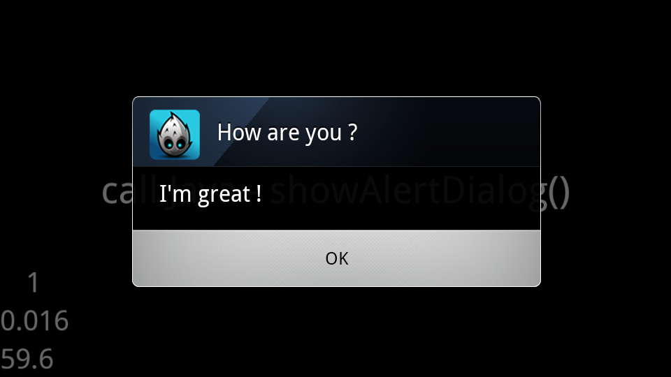

设置 Quick-Cocos2d-x 在 Windows 下的编译环境
配置编译环境的基本步骤：
- 下载 Quick-Cocos2d-x 源代码
- 设置运行环境
- 安装 Java SDK
- 安装最新的 Android ADT bundle 和 Android NDK
- 编译 LuaJavaBridge 示例，并在 Android 真机上进行测试
Step 1: 下载 Quick-Cocos2d-x 源代码
访问 https://github.com/chukong/quick-cocos2d-x/releases 下载最新版 quick 源代码。
由于 Android SDK 和 NDK 的问题， Quick-Cocos2d-x 目录的放置有一定要求 ：
- 必须和 Android SDK/NDK 在同一个分区
- 不能放在根目录
- 路径中不能包含中文和空格（所以别放桌面了）
Step 2: 设置运行环境
运行 setup.bat，完成运行环境的设置工作，成功会看到如下界面：

启动 player/win/player.exe，即可运行示例和您的项目。

Step 3: 安装 Java SDK
从 http://www.oracle.com/technetwork/java/javase/downloads/ 下载最新版的 Java SDK，并进行安装。
Step 4: 安装最新的 Android ADT bundle 和 Android NDK
1.从 http://developer.android.com/sdk/ 下载最新的 ADT Bundle for Windows 。
2.解压缩 adt-bundle-windows-x86-2014????.zip 。
3.将目录 adt-bundle-windows-x86-2014???? 改名为 android 。
4.将目录 android\sdk 改名为 android\android-sdk-windows 。
5.从 http://developer.android.com/tools/sdk/ndk/index.html 下载 Android NDK r9?
6.解压缩 android-ndk-r9?-windows-x86.zip
7.将目录 android-ndk-r9? 移动到 android\android-ndk-r9?
最终的目录结构:
<PATH_TO>\android\android-ndk-r9?
<PATH_TO>\android\android-sdk-windows
<PATH_TO>\android\eclipse

8.运行 android\android-sdk-windows\tools\android.bat , 选中 Android SDK 2.2 （ 如果看不到 Android SDK 2.2，请设置代理 ）, 然后安装需要的包。

Step 5: 编译 LuaJavaBridge 示例，并在 Android 真机上进行测试
启动 命令行提示符 程序, 改变当前目录为
cd Quick-cocos2d-x\sample\luajavabridge\proj.android
build_native.bat
如果一切正常，等待几分钟以后会看到如下信息：
SharedLibrary : libgame.so
Install : libgame.so => libs/armeabi/libgame.so
将项目导入 Eclipse ADT
启动 \
1.选择菜单 File -> Import , 再选择 Android -> Existing Android Code Into Workspace :

2.点击 Browse 按钮, 选择 \Quick-cocos2d-x\lib\cocos2d-x\cocos2dx\platform\android\java 目录:

3.点击 Finish.
4.重复上述步骤, 将 luajavabridge\proj.android 目录导入 Eclipse:

5.在左侧 Package Explorer 里的 LuajavaBridge 项目上点击鼠标右键，选择菜单 Properties :

6.如果 Library 中已经存在 libcocos2dx 项，请先删除。然后点击 Add 按钮, 再选择添加 libcocos2dx 库.

7.导入完成。
设置 Android 设备允许真机调试
Android 官方文档：http://developer.android.com/tools/device.html
-
Enable USB debugging on your device.
- On most devices running Android 3.2 or older, you can find the option under Settings > Applications > Development.
- On Android 4.0 and newer, it’s in Settings > Developer options.
Note: On Android 4.2 and newer, Developer options is hidden by default. To make it available, go to Settings > About phone and tap Build number seven times. Return to the previous screen to find Developer options.
- 在系统设置中找到“开发者选项”，打开“USB调试”。
- Set up your system to detect your device.
- If you’re developing on Windows, you need to install a USB driver for adb. For an installation guide and links to OEM drivers, see the OEM USB Drivers document.
- 根据不同的机型，也许需要安装该机型特定的 USB 驱动程序。例如 Moto 就必须安装 Moto 的 USB 驱动。
在设备上测试 LuaJavaBridge 示例
1.在 Eclipse 里选择菜单 Window -> Show View -> Other… , 再选择 Android -> Devices .
2.如果设备设置完成，并且安装了正确的 USB 驱动，那么在 Devices 标签页中就可以看到你的设备:

如果看不到设备，请仔细检查设备设置和驱动程序。
3.在项目 LuajavaBridge 上点击鼠标右键, 选择菜单 Debug As -> Android Application . 如果一切正常，等一会儿就可以在设备上看到运行画面了：

-EOF-